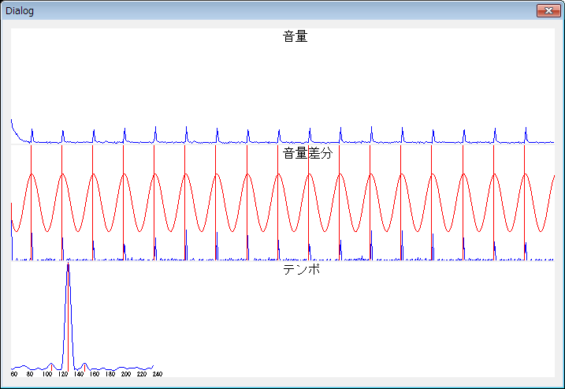

C/C++言語で音声ファイルのテンポ解析を行うサンプルプログラム
更新日時：2012/2/5
C/C++言語で音楽の音声ファイルのテンポ解析を行うサンプルプログラムです。テンポ(BPM)と拍の開始位置を解析します。
サンプルのため、対応しているwavファイルのフォーマットは、チャンネル数がステレオで、ビット／サンプルが16bit、サンプリング周波数が44.1kHzのみです。
サンプルソース
サンプルソースの主要部分は下の方に載せています。全ソースはこちらにあります。ビルド済みの実行ファイルとVisual C++ 2010 Express Edition用のプロジェクトはこちらからダウンロードできます。
解説
一般的に音楽の音声ファイルは拍の開始位置で音量が増加する特性があるため、音量の増加量が時間方向に周期的に表れます。そのため音量の時間変化の周波数成分から周期を求めることで、テンポが解析できます。また、周波数成分の位相から拍の開始位置を求めることができます。
テンポ解析の処理の流れは以下の通りです。
- wavファイルを一定時間(以下フレーム)ごとに区切る。
- フレームごとの音量を求める。
- 隣り合うフレームの音量の増加量を求める。
- 増加量の時間変化の周波数成分を求める。
- 周波数成分のピークを検出する。
- ピークの周波数からテンポを計算する。
- ピークの周波数成分の位相から拍の開始位置を計算する。
それぞれの処理について以下で説明します。
１．wavファイルを一定時間(以下フレーム)ごとに区切る
一般的な音楽のテンポは60～240BPMで、また小数点のBPMは設定されません。そのため、1フレームは少なくとも60～240BPMを1BPM単位で区別できる長さにする必要となります。239BPMと240BPMを区別できるようにすると、1フレームは60÷239 - 60÷240≒0.001秒の長さとする必要があります。サンプリング周波数が44.1kHzの場合、1フレームのサンプル数は0.001×44100＝44.1個となります。しかし、1フレームの長さを短くしすぎると周波数解析に時間がかかります。また、1フレームの精度が不足しても、音楽ファイル全体を解析すると複数周期がふくまれるため平均されて正しい値に近くなります。実験を行ったことろ、1フレームのサンプル数を10000としても手持ちの音楽ファイルで正確なテンポ解析ができていました。サンプルプログラムでは1フレームのサンプル数を512としています。
２．フレームごとの音量を求める
音量はフレームごとに振幅の実効値を計算します。1フレームのサンプル数をN、振幅をV(n)とすると、以下の式で実効値を計算します。
３．隣り合うフレームの音量の増加量を求める
i番目のフレーム音量をVol(i)として、フレームごとの音量の増加量Vol(i) - Vol(i-1)を計算します。ただし、増加量がマイナスの値の場合は、増加量を0とします。これは、音量の減少の仕方は増加の仕方と比較して周期性がないためと、位相を計算する際に、周波数解析の基本パターン波形の頂点の位置を拍の開始位置に合わすためです。
４．増加量の時間変化の周波数成分を求める
60BPM～240BPMの範囲を1BPM単位で、sin波形とcos波形を基本パターンとして周波数成分を求めます。n番目のフレームの音量の増加量をD(n)、フレームのサンプリング周波数をsとすると、各BPMのマッチ度Rbpmは以下の式で計算できます。
ここで、fbpmはBPM値÷60、sはwavファイルのサンプリング周波数÷フレームのサンプル数です。
５．周波数成分のピークを検出する
各BPMのマッチ度Rbpmのピークを検出します。ピークは下図のように1/2、2倍の位置でも検出されるため、サンプルプログラムでは上位3つまでのピークを検出しています。1番目のピークが正しいBPMの1/2、2倍の位置で検出される場合もあります。

６．ピークの周波数からテンポを計算する
BPMは1分間(60秒)あたりの拍の数のため、ピークの周波数を60倍した値がBPM値になります。
７．ピークの周波数成分の位相から拍の開始位置を計算する
拍の開始位置は、下図のように周波数解析に使用した基本パターンのsin波形とcos波形を合成した波形の頂点の位置とほぼ一致します。
位相θは、４．で求めたa、bから以下の式で計算します。
位相θから拍の開始位置(秒)は以下の式で計算します。θがマイナスの場合は、2πを加算します。
サンプルプログラムでは、DAWソフトのCubaseで開始位置を調整するために、2π-θを拍数でも表示しています。
実行結果
メトロノームの音を録音したwavファイルを解析した結果を下図に示します。

132BPMのメトロノームの音を解析した結果
1番目のピークで132BPMが正しく検出されています。赤の縦線で表示した拍の開始位置も音量増加の位置とほぼ一致しています。
実際の音楽ファイルでは、音量増加の周期が目で見てもわかりにくため解析した結果が正確かは、DAWソフトでテンポと開始位置を設定して聞いて確かめる必要があります。
主要部分のソース
const int FRAME_LEN = 512;
double frame[FRAME_LEN];
int N = datasize/sizeof(short) / 2 / FRAME_LEN;
double *vol = new double[N];
ZeroMemory(vol, sizeof(double)*N);
printf("analyze num: %d\n", N);
printf("analyze time : %f sec\n", double(N) * FRAME_LEN / fmt->dwSamplesPerSec);
unsigned long i = 0;
int j = 0;
int m = 0;
while (i <= datasize/sizeof(short) && m < N)
{
frame[j] = data[i];
j++;
if (j == FRAME_LEN)
{
// 音量(実効値)=sqrt(1/FRAME_LEN * Σframe[n]^2)
double sum = 0;
for (int n = 0; n < FRAME_LEN; n++)
{
sum += frame[n] * frame[n];
}
vol[m] = sqrt(sum / FRAME_LEN);
m++;
j = 0; // 次フレーム
}
i += 2;
}
// 音量差分(増加のみ)
double *diff = new double[N]; // 音量差分
diff[0] = vol[0];
for (int i = 1; i < N; i++)
{
if (vol[i] - vol[i-1] > 0)
{
diff[i] = vol[i] - vol[i-1];
} else {
diff[i] = 0;
}
}
const double s = double(fmt->dwSamplesPerSec) / double(FRAME_LEN); // サンプリング周波数
// テンポ解析
double *a = new double[240-60+1];
double *b = new double[240-60+1];
double *r = new double[240-60+1];
for (int bpm = 60; bpm <= 240; bpm++)
{
double a_sum = 0;
double b_sum = 0;
double f = double(bpm) / 60;
for (int n = 0; n < N; n++)
{
double win = han_window(n, N);
a_sum += diff[n] * cos(2.0 * M_PI * f * n / s) * win;
b_sum += diff[n] * sin(2.0 * M_PI * f * n / s) * win;
// 注意：窓関数を使用しないと端の影響で誤差が出る
}
double a_tmp = a_sum / N;
double b_tmp = b_sum / N;
a[bpm-60] = a_tmp;
b[bpm-60] = b_tmp;
r[bpm-60] = sqrt(power(a_tmp, b_tmp));
}
// ピーク解析
int peak_x[3];
find_peak3(r, 240-60+1, peak_x);
double start_n;
double beat_gap;
for (int idx = 0; idx < 3; idx++)
{
if (peak_x[idx] < 0)
{
break;
}
printf("[%d]\n", idx+1);
int peak_bpm = peak_x[idx] + 60;
printf("peak bmp : %d\n", peak_bpm);
// 位相差
double theta = atan2(b[peak_x[idx]], a[peak_x[idx]]);
if (theta < 0)
{
theta += 2.0 * M_PI;
}
double peak_f = double(peak_bpm) / 60;
double start_time = theta / (2.0 * M_PI * peak_f);
double start_beat = theta / (2.0 * M_PI);
printf("first beat time : %f sec\n", start_time);
printf("first beat : %f beat\n", start_beat);
double ajust_beat = (2.0 * M_PI - theta) / (2.0 * M_PI);
int ajust_beat1 = int(ajust_beat*4) % 4;
int ajust_beat2 = int(ajust_beat*4*120) % 120;
printf("ajust beat for cubase : 1 . 1 . %d . %d\n", ajust_beat1+1, ajust_beat2);
}
トップページへ